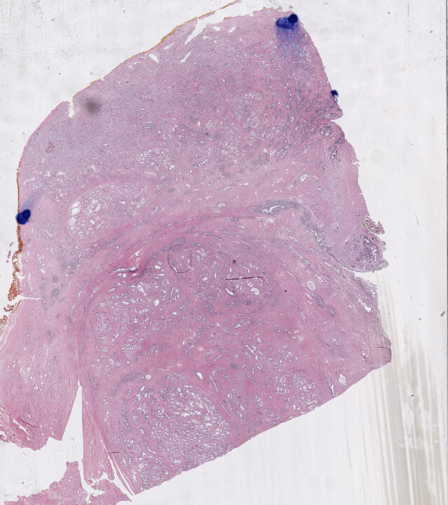
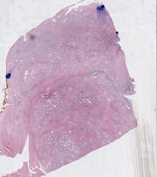
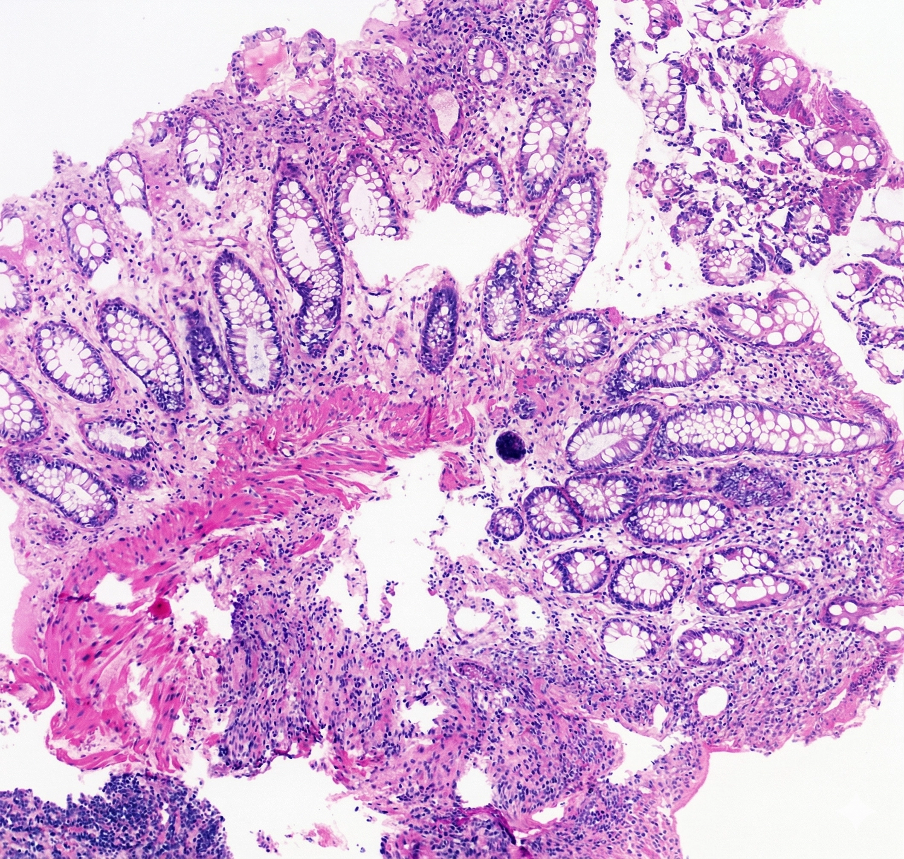
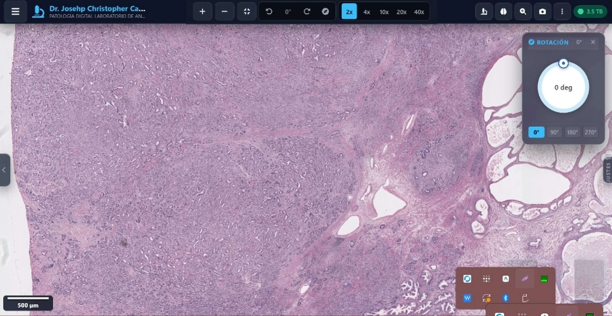

Notificaciones de Despacho
3 nuevasPortal Quirúrgico Conectado
Activo 24/7NÚCLEO OPERATIVO DEL APLICATIVO
Sincronizado IANotificación Push en Quirófano
El cirujano recibe alerta push en tiempo real en la Dynamic Notch y banner superior en menos de 14s tras el veredicto patológico.
Microfotografía 40x Calibrada
Microscopía digital a nivel celular calibrada a 4µm incrustada en el informe para verificación morfológica inmediata de atipias.
Diagnóstico Definitivo & Margen R0
Graduación histológica (Gleason/FNCLCC), reporte preliminar y estado milimétrico de márgenes según protocolos CAP 2026.
Firma Digital & QR 26Q
Firma médica del Dr. Joseph Castillo (CMP 56435) con sello pericial, hash SHA-256 inmutable y QR de custodia 26Q.
Descarga PDF & WhatsApp Directo
Descarga en un toque del PDF oficial de ultra-resolución y reenvío cifrado instantáneo a WhatsApp del equipo quirúrgico.
INFORME HISTOPATOLÓGICO OFICIAL
ID: 26Q-B2026-08942 • QR de Verificación ActivoPaciente: García Morales, María Elena (54 años)
Muestra remitida: Biopsia de mama izquierda, cuadrante superior externo
Diagnóstico de Patólogo: Carcinoma Ductal Infiltrante (NST), Grado Nottingham 2.
Inmunohistoquímica: RE (+) 95%, RP (+) 80%, HER2 (1+) Negativo, Ki-67: 18%

Figura 2: Atipia Nuclear y Mitosis (40x)Crear Panel de Inmunohistoquímica
Diagnósticos Disponibles (52)
Seleccionados (0/5)
Busque diagnósticos o anticuerpos en la casilla de la izquierda. Haga clic en los resultados para agregarlos a su panel.

Tarifas Preferenciales para Clínicas & Cirujanos
| Procedimiento Quirúrgico | Tiempo | Tarifa Preferencial |
|---|---|---|
|
Morcelados Prostáticos / RTU HoLEP, ThuLEP, Bipolar |
48 - 72 hrs | S/ 70.00 |
|
Prostatectomía Radical Oncológica Abierta, Laparoscópica, Robótica |
4 - 5 días | S/ 140.00 |
|
Piezas Quirúrgicas Menores Fimosis, Quistes, Lesiones de Piel |
48 hrs | S/ 60.00 |
|
Biopsias Endoscópicas Vejiga, Uréter, Gástricas |
48 hrs | S/ 60.00 |
|
Biopsia de Próstata por Punción Tru-Cut sistemática o por fusión |
72 hrs | S/ 120.00 |
Simulador de Convenio Institucional
Ajusta el volumen estimado de tu centro quirúrgico: